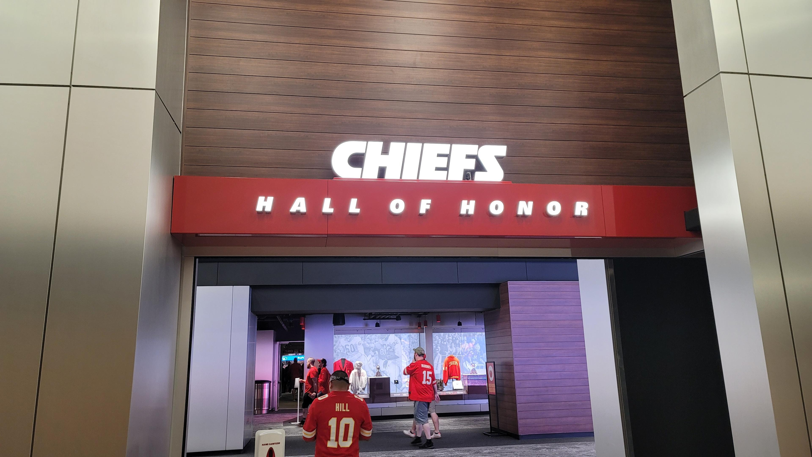
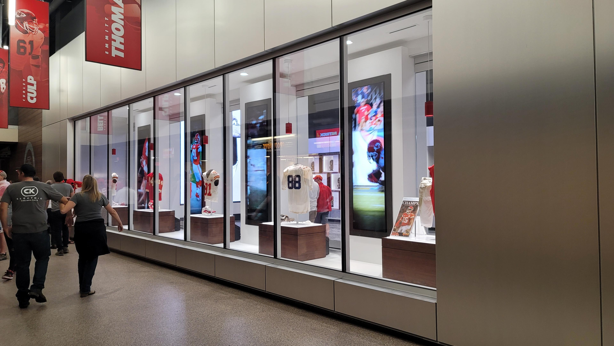
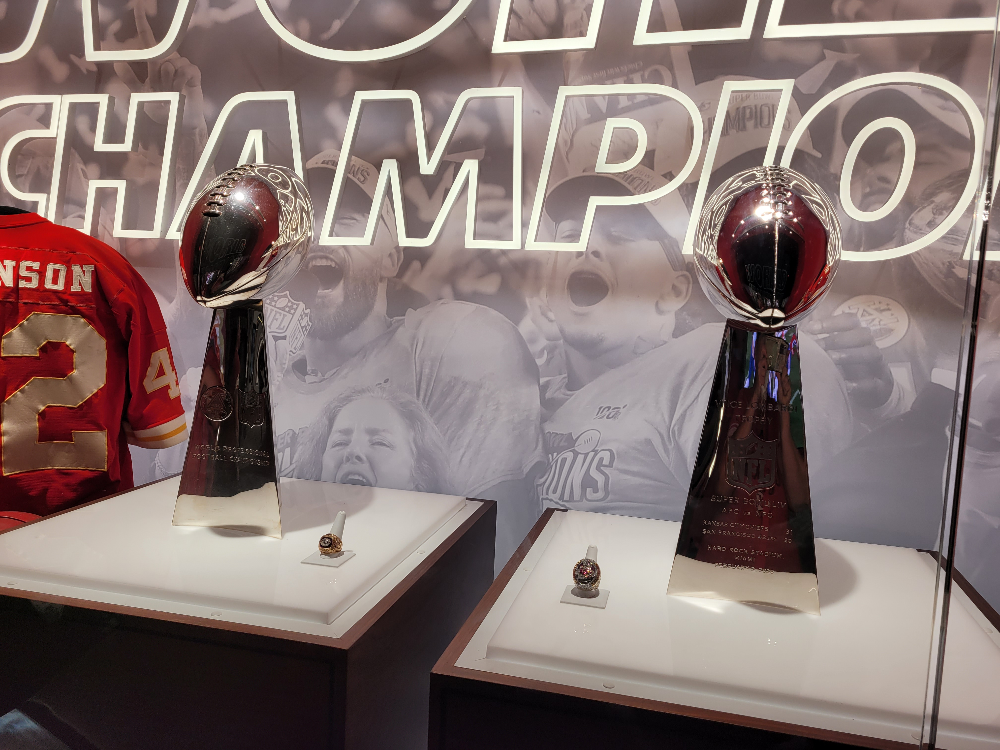
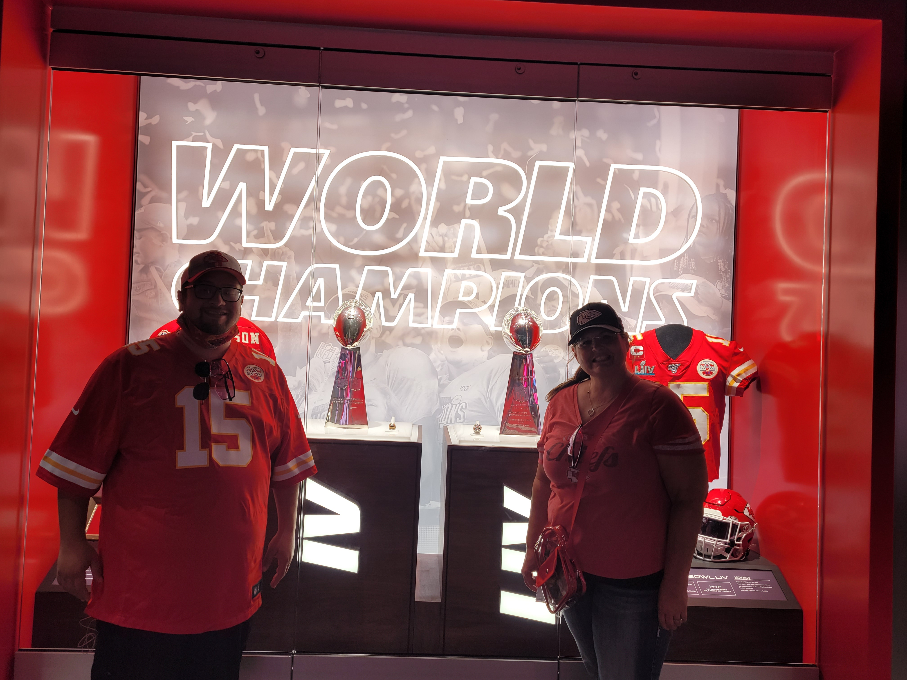
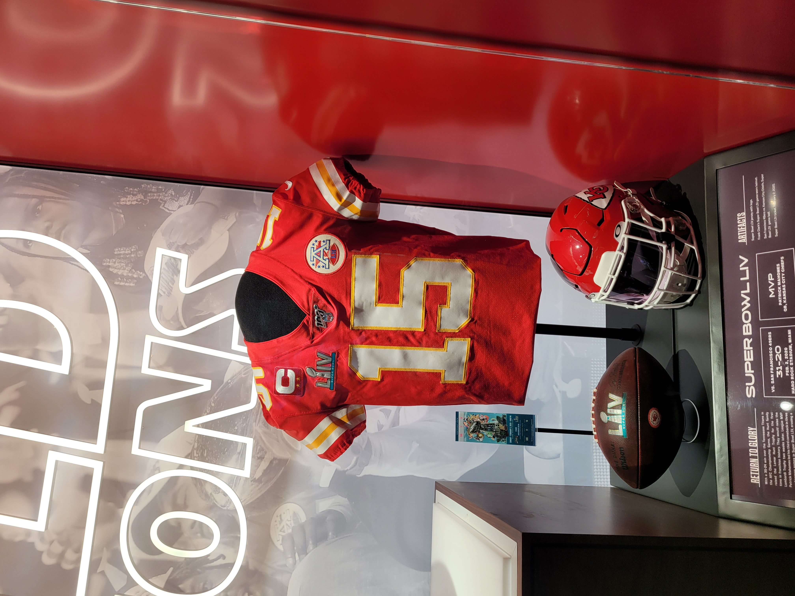

Whats New at GEHA at Arrowhead?
Hall of Honor
Among all the beautiful renovations happening in GEHA Arrowhead
Kingdom, the Hall of Honor happens to be one of the crowning jewel
attractions. Located on the first level of the stadium, the Hall of
Honor is carpeted with displays of the Kansas City Chiefs History,
the Superbowl trophies, and the honorees of the Kansas City Hall of Fame!
- Entrance to the Hall
- Display of Honorees
- Super Bowl Trophies
- Posing with the trophies
- Patrick Mahomes Superbowl Uniform